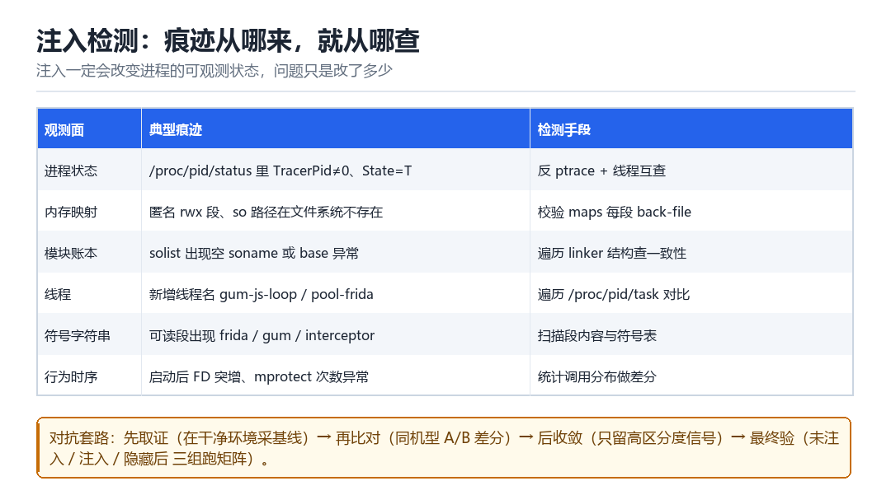

Android 注入检测
如何检测注入痕迹
注入必然改变进程状态；检测的本质是“知道正常长什么样”。
11.1 六个观测面

| 观测面 | 典型痕迹 | 检测手段 |
|---|---|---|
| 进程状态 | TracerPid≠0、State=T | 轮询 /proc/self/status |
| 内存映射 | 匿名 rwx 段、路径不存在 | 校验每段的 back-file |
| 模块账本 | solist 空 soname | 遍历 link_map |
| 线程 | gum-js-loop 等名字 | 遍历 /proc/self/task |
| 符号字符串 | 段内出现 frida/gum | 扫描可读段 |
| 行为时序 | FD 突增、mprotect 频繁 | 统计与基线差分 |
11.2 为什么“扫描字符串”不可靠
字符串扫描是最容易实现、也最容易被绕过的检测。改个名字、把字符串加密、或者干脆不用明文常量，都能让扫描失效。所以它只能作为辅助信号：命中可以作为证据，未命中不能作为“清白”的证明。
11.3 结构差分：更难对付的一类
不看“有没有 frida”，而看“这个进程的结构是否合理”。举例：
- 一个从没调用过网络的工具类 App，进程里却有 8 个线程——不合理。
- maps 里有 12 段匿名可执行映射，而正常只有 3 段——不合理。
- ClassLoader 有 5 个，其中 2 个的 dexPath 指向私有目录——不合理。
- 某方法第一次调用耗时 0.2ms，第二次 12ms——JIT/去优化痕迹，不合理。
这类检测的可怕之处在于：它不依赖任何已知特征，改名换工具都无效。唯一的对策是让结构真的变合理——这就是 F11 与 L09 要解决的问题。
11.4 检测器的自污染
# 错误做法：一启动就统计线程数
n = count_threads() # 此时检测 SDK 自己已经建了 3 个线程
if n > 8: alert() # 于是干净设备也报警
# 正确做法：先采基线，再比较增量
base = count_threads() # 在 SDK 初始化完成后采
# 之后只在“业务触发点”做增量比较11.5 本章自测
- 六个观测面里，哪一个最难被伪造？为什么？
- 为什么“字符串扫描”只能作为辅助信号？
- 举三个“结构不合理”的例子，并说明怎么测量。
- 什么是自污染？怎么避免？
11.6 深入：FD 是最容易被忽略的观测面
一个进程打开了哪些 fd，能透露出大量信息：连了哪些 socket、映射了哪些文件、有没有额外的 pipe。注入 agent 往往会新增 socket、pipe、以及若干 /proc 的读取句柄。
ls -l /proc/self/fd # 每个 fd 指向什么
cat /proc/self/fdinfo/N # 单个 fd 的 flags / pos
# 统计：
ls /proc/self/fd | wc -l| fd 类型 | 正常 App | 注入后 |
|---|---|---|
| socket | 少量（网络、Binder） | 多出与 server 通信的 |
| pipe | 偶发 | JS 线程通信管道 |
| /dev/ashmem | 图形、ART 相关 | 可能多出 dex/so 载体 |
| anon_inode | epoll/eventfd | 数量上升 |
11.7 时序侧信道：一个被低估的方向
hook 一定会带来额外开销。这个开销在“单次调用”上可能只有几微秒，但在一万次调用上就是几十毫秒。检测方只要统计高频路径的耗时分布，就能发现异常。
t0 = now_ns()
for _ in range(10000): target_call()
dt = now_ns() - t0
# 与基线比较：p50 / p95 / 最大值11.8 原理推演：为什么“注入必然留痕”
因为注入是一个“从外部改变进程状态”的操作，而进程状态是可观测的。你可以让每一处痕迹都“看起来正常”，但不可能让“状态完全没变”——因为注入的目的就是改变状态。
| 改动 | 必然产生的可观测差异 |
|---|---|
| 新增代码映射 | maps 多一段 |
| 新增线程 | task 目录多一项 |
| 新增 fd | fd 目录多一项 |
| 改函数入口 | 字节或页权限变化 |
所以对抗的目标不是“消除痕迹”，而是“让痕迹落在正常范围之内”。这就是为什么“基线”如此重要——没有基线，你连“什么是正常”都不知道。
11.9 数据细节：一个 App 的正常 fd 画像
| fd 类型 | 数量级 | 说明 |
|---|---|---|
| socket | 3~10 | Binder、网络、日志 |
| anon_inode | 5~20 | epoll、eventfd、dmabuf |
| /dev/ashmem 或 memfd | 2~10 | 图形、ART |
| 普通文件 | 5~30 | 资源、配置、dex |
注入 agent 后，典型变化是 socket +1~2、pipe +1~2、anon_inode 增加若干。单看绝对值不可靠，看“增量”才可靠。
注入完成后的第一张快照
假设 agent 已经落地、detach 也做完了，TracerPid 干干净净地回到 0。现在把这台进程像做 CT 一样扫一遍：maps 里多了几段、task 里多了几个名字奇怪的线程、fd 里多出一对 pipe 和一个 socket、smaps 里悄悄多了一页私有脏内存。没有任何一处写着「frida」四个字母，但每一处都在说「这里多了个东西」。注入检测真正练的，就是认出这种「多出来」的形状。
新手爱写字符串扫描，因为它最容易出结果；老手更信结构，因为名字能改、字节能加密，「一个 JS 引擎必须有一块堆、必须有线程、必须能收发消息」这件事改不掉。下面把一次注入前后的差异按观测面拆开，每一拍都给出能自己跑出来的量。
逐个观测面数「多出来的东西」
- maps → 对进程的所有映射 → 注入前记下段数与每段权限；注入后多出 agent so 的 r-x 段、以及 JS 堆所在的匿名 rw- 段 → 结果：段数、匿名可执行段数量同时偏离基线。
- task → 对
/proc/self/task→ 多出gum-js-loop、frida-*一类的线程名，以及一个常驻的控制线程 → 结果：线程数 +3~5，且新线程的栈落在刚多出来的匿名段里。 - fd → 对
/proc/self/fd→ 多出与 server 通信的 socket、JS 线程用的 pipe、以及若干/proc读取句柄 → 结果：fd 总数上升，类型分布里 anon_inode 变多。 - solist / link_map → 对已加载模块链表 → 多出
frida-agent.so或无名项 → 结果：模块账本与 maps 里的段可以逐条对上（对不上更可疑）。 - smaps → 对每个映射的
Private_Dirty→ 被 hook 过的文件页因 COW 变成私有脏页 → 结果：权限看着正常，脏页计数却涨了。 - 时序 → 对高频路径 → hook 的蹦床让单次调用多出几微秒 → 结果：一万次调用的 p95 明显右移，这是最不容易藏的一项。
动手：自己拍一组前后对照
PID=$(adb shell pidof com.target.app | tr -d '\r')
adb shell cat /proc/$PID/maps > A_maps.txt
adb shell cat /proc/$PID/smaps > A_smaps.txt
adb shell ls /proc/$PID/task > A_task.txt
adb shell ls -l /proc/$PID/fd > A_fd.txt
# 此时启动：frida -U com.target.app -l probe.js
adb shell cat /proc/$PID/maps > B_maps.txt
adb shell cat /proc/$PID/smaps > B_smaps.txt
adb shell ls /proc/$PID/task > B_task.txt
adb shell ls -l /proc/$PID/fd > B_fd.txt
diff A_maps.txt B_maps.txt | head -40
diff A_task.txt B_task.txt
grep -c 'Private_Dirty' A_smaps.txt B_smaps.txt成功：diff A_maps.txt B_maps.txt 里出现新增的 r-x / rw- 段，diff A_task.txt B_task.txt 多出几条线程，fd 里能看到新增的 socket 或 pipe——三处同时偏离，就是一份完整的注入证据。失败要先分清是「没注入」还是「查错层」：PID 取到空值说明 App 没在跑或被重启了，先补 adb shell pidof；四个 diff 全空，别急着下「干净」的结论，很可能是 agent 走了内存加载、账本里没有名字，得换到 smaps 的 Private_Dirty 与耗时分布去看；另外采集脚本自己开的 shell、`adb` 起的进程也会短暂出现在列表里，务必在页面静止后采，只认成对出现的差异。
| 现象 | 更可能的解释 | 换哪个观测面复核 |
|---|---|---|
| maps 干净、task 多了线程 | agent 走匿名内存加载 | smaps 私有脏页 + 耗时 p95 |
| 线程名全是正常的 | 名字被改过 | 看线程栈落在哪一段、TLS 布局 |
| 四本账都对得上 | 只查了「名字」这一维 | 查数量、时序、布局的关系 |
| 干净机也报异常 | 检测器自污染或采样时机 | 页面静止后重采基线 |
| 带路径的段显示 (deleted) | 文件加载后被 unlink | 核对 back-file 是否真实存在 |
这六个观测面会在后面被反复调用：第 09 章的 GOT / inline hook 留下的字节变化，正是本章 CRC 与 Private_Dirty 两项的输入；第 12 章 Java Hook 让方法变 native，会在「调用耗时分布」这一行显形；第 16 章做算法分析时遇到的反调试，多半就是拿本章这几条命令反过来查你的。第三部 F11 会把它们收成一张总表。